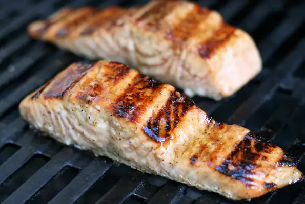

Glazed Salmon

Quick, easy grilled salmon
Fast delicious salmon you can make with only a couple ingredients! Takes an hour and 10 minutes, serves 6.
Ingredients
- 2 tablespoons dark brown sugar
- 2 tablespoons apple cider vinegar
- 2 tablespoons olive oil
- 1 teaspoon Dijon mustard
- 1/2 teaspoon coarsely ground black pepper
- 6 (3 ounce) salmon fillets, thawed
Steps
- Combine brown sugar, apple cider vinegar, olive oil, Dijon mustard, and pepper in a bowl for the marinade
- Place salmon fillets into a shallow glass dish and pour 1/2 of the marinade over the fish. Reserve the remaining marinade. Cover and refrigerate for 1 hour.
- Preheat the outdoor grill for medium heat and lightly oil the grate. Discard marinade from the glass dish
- Grill salmon, brushing with the reserved marinade several times, until it flakes easily with a fork, 4-6 minutes